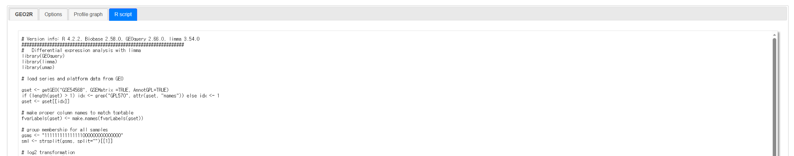

이번 단계의 목표
- GEO2R에서 생성한 R script의 각 구간이 무엇을 하는지 설명할 수 있습니다.
getGEO()다운로드 오류와 GPL·그룹·annotation 오류를 점검할 수 있습니다.- 모든 probe의 DEG 결과를 저장하고 QC 그림을 다시 생성할 수 있습니다.
- 자료의 형태에 따라 limma, DESeq2와 edgeR 중 적절한 도구를 선택할 수 있습니다.
1. GEO2R script의 전체 구조

| 코드 구간 | 역할 |
|---|---|
getGEO() | GSE Series Matrix와 platform annotation을 내려받아 ExpressionSet 객체를 만듭니다. |
| GPL 선택 | 한 GSE에 여러 platform이 있으면 분석 대상 GPL을 선택합니다. |
gsms, sml | 각 GSM이 어느 그룹에 속하는지 문자 벡터로 기록합니다. |
| log2 transformation | 발현값 분위수를 이용하여 log2 변환 필요성을 자동 판단합니다. |
| design matrix | 각 샘플과 분석 그룹의 관계를 통계모형으로 표현합니다. |
lmFit() | 각 probe에 선형모형을 적합합니다. |
makeContrasts() | Disease − Control과 같은 비교 방향을 정의합니다. |
eBayes() | probe 간 정보를 빌려 분산을 안정화하고 moderated 통계량을 계산합니다. |
topTable() | logFC, P-value, FDR과 annotation을 결과표로 반환합니다. |
| QC와 plots | P-value, volcano, MD, boxplot, density와 UMAP을 생성합니다. |
2. 패키지 설치는 한 번, 불러오기는 매번
매 실행마다 BiocManager::install()을 수행할 필요는 없습니다. 설치 여부를 확인한 뒤 없는 패키지만 설치합니다.
if (!requireNamespace("BiocManager", quietly = TRUE)) {
install.packages("BiocManager")
}
bioc_pkgs <- c("GEOquery", "limma", "Biobase")
missing_bioc <- bioc_pkgs[
!vapply(bioc_pkgs, requireNamespace, logical(1), quietly = TRUE)
]
if (length(missing_bioc) > 0) {
BiocManager::install(missing_bioc, ask = FALSE, update = FALSE)
}
if (!requireNamespace("umap", quietly = TRUE)) {
install.packages("umap")
}
library(GEOquery)
library(limma)
library(Biobase)
library(umap)sessionInfo()를 저장하세요.3. Windows에서 getGEO() 다운로드 실패
다음 오류는 DEG 분석 오류가 아니라 Series Matrix를 임시폴더로 내려받지 못한 다운로드 단계의 오류입니다.
Failed to download
C:\Users\USER\AppData\Local\Temp\Rtmp.../GSE54568_series_matrix.txt.gz일시적인 NCBI 접속 문제, 짧은 timeout, 기관 네트워크·프록시, 보안 프로그램, 임시폴더 권한 또는 불안정한 저장 경로가 원인일 수 있습니다. 오류문만으로 한 가지 원인을 확정할 수는 없습니다.
권장 해결 순서
- 웹브라우저에서 GEO와 NCBI에 접속되는지 확인하고 잠시 후 다시 시도합니다.
- R과 RStudio를 재시작하고 다운로드 제한시간을 늘립니다.
- 임시폴더 대신 영문으로 된 짧은 로컬 cache 폴더를 지정합니다.
- Windows 다운로드 방식을
libcurl로 명시합니다. - 기관 네트워크라면 프록시·방화벽 정책을 관리자에게 확인합니다.
- 그래도 실패하면 Series Matrix를 브라우저로 내려받아 로컬 파일에서 불러옵니다.
options(timeout = 600)
options(download.file.method = "libcurl")
cache_dir <- "C:/GEO_cache"
dir.create(cache_dir, recursive = TRUE, showWarnings = FALSE)
gset_list <- getGEO(
"GSE54568",
GSEMatrix = TRUE,
AnnotGPL = TRUE,
destdir = cache_dir
)C:/GEO_cache 또는 C:\\GEO_cache를 사용합니다. 한글·공백·OneDrive 동기화 폴더는 반드시 실패하는 것은 아니지만, 문제를 줄이기 위해 실습 cache는 짧은 로컬 경로를 권장합니다.
수동 다운로드 후 불러오기
GSE 페이지의 Series Matrix File(s)에서 GSE54568_series_matrix.txt.gz를 내려받아 C:/GEO_cache에 저장한 뒤 실행합니다.
local_matrix <- "C:/GEO_cache/GSE54568_series_matrix.txt.gz"
stopifnot(file.exists(local_matrix))
gset_list <- getGEO(
filename = local_matrix,
GSEMatrix = TRUE,
AnnotGPL = FALSE
)AnnotGPL = FALSE로 불러오면 NCBI가 생성한 annotation이 결과에 붙지 않을 수 있습니다. 분석 자체는 가능하지만 probe-to-gene annotation은 GPL 파일이나 플랫폼별 annotation package를 이용해 별도로 확인해야 합니다.
4. ExpressionSet과 GPL 선택 확인
# 내려받은 ExpressionSet의 개수와 platform 이름 확인
length(gset_list)
names(gset_list)
if (length(gset_list) > 1) {
idx <- grep("GPL570", names(gset_list), fixed = TRUE)
if (length(idx) != 1) {
stop("GPL570에 해당하는 ExpressionSet을 하나만 선택하지 못했습니다.")
}
} else {
idx <- 1
}
gset <- gset_list[[idx]]
annotation(gset)
dim(exprs(gset))
dim(pData(gset))
head(sampleNames(gset))
head(fvarLabels(gset))annotation(gset)이 일치해야 합니다.5. 그룹 문자열에서 가장 많이 생기는 오류
GEO2R가 만든 gsms 문자열의 각 문자는 ExpressionSet의 각 sample에 순서대로 대응합니다.
gsms <- "111111111111111000000000000000"
sml <- strsplit(gsms, split = "")[[1]]
stopifnot(length(sml) == ncol(gset))
table(sml)
groups <- make.names(c("Disease", "Control"))
gs <- factor(sml, levels = c("1", "0"), labels = groups)
table(gs, useNA = "ifany")
data.frame(
GSM = sampleNames(gset),
group = gs
)levels(gs) <- groups만 사용하면 기존 factor level의 정렬 순서를 잘못 이해할 위험이 있습니다. 위처럼 원래 코드값 1, 0과 원하는 label을 명시하고, GSM별 배정표를 직접 확인하는 편이 안전합니다.
문자열 길이와 ncol(gset)이 다르면 variable lengths differ, design matrix 차원 불일치 또는 잘못된 그룹 배정이 발생할 수 있습니다. 샘플을 제외했다면 문자열도 같은 순서로 수정해야 합니다.
6. log2 변환과 결측치 처리
GEO2R 코드는 발현값 분위수로 log2 변환 필요성을 추정합니다. 이미 log2 변환된 값을 다시 log2로 변환하면 분포가 왜곡되므로 GSE의 Data processing 설명과 boxplot을 함께 확인합니다.
ex <- exprs(gset)
qx <- quantile(
ex,
probs = c(0, 0.25, 0.5, 0.75, 0.99, 1),
na.rm = TRUE
)
qx
log_needed <- (qx[5] > 100) ||
((qx[6] - qx[1] > 50) && qx[2] > 0)
if (log_needed) {
ex[ex <= 0] <- NA_real_
exprs(gset) <- log2(ex)
}
# 결측치가 하나라도 포함된 probe 제거
keep <- rowSums(is.na(exprs(gset))) == 0
gset <- gset[keep, ]gset[keep, ]처럼 첫 번째 차원을 선택합니다.7. design과 contrast 검증
gset$group <- gs
design <- model.matrix(~ 0 + group, data = pData(gset))
colnames(design) <- levels(gs)
design
colSums(design)
contrast_text <- "Disease-Control"
cont.matrix <- makeContrasts(
contrasts = contrast_text,
levels = design
)
cont.matrix
fit <- lmFit(gset, design)
fit2 <- contrasts.fit(fit, cont.matrix)
fit2 <- eBayes(fit2, trend = FALSE, robust = FALSE)Disease-Control이면 logFC 양수는 Disease에서 증가, 음수는 Disease에서 감소를 의미합니다. contrast 이름과 행렬을 출력하여 방향을 확인한 뒤 분석을 계속합니다.연령, 성별, batch 또는 paired subject를 보정해야 하는 연구라면 GEO2R의 단순 2그룹 모형만으로는 충분하지 않을 수 있습니다. 이 경우 phenotype table을 정리하여 공변량과 blocking을 포함한 별도의 design을 작성해야 합니다.
8. 전체 DEG 결과와 annotation 오류
deg_all <- topTable(
fit2,
coef = 1,
adjust.method = "BH",
sort.by = "P",
number = Inf
)
colnames(deg_all)
colnames(deg_all)[duplicated(colnames(deg_all))]
wanted <- c(
"ID", "logFC", "AveExpr", "t", "P.Value",
"adj.P.Val", "B", "Gene.symbol",
"Gene.Symbol", "Gene.title"
)
available <- intersect(wanted, colnames(deg_all))
deg_export <- deg_all[, available, drop = FALSE]
write.csv(
deg_export,
"GSE54568_Disease_vs_Control_all_probes.csv",
row.names = FALSE,
fileEncoding = "UTF-8-BOM"
)다음과 같은 오류는 대부분 platform마다 annotation 열 이름이 다르기 때문에 발생합니다.
Error in `[.data.frame`(...): undefined columns selectedcolnames(deg_all)로 실제 열을 확인하고 존재하는 열만 선택합니다. Gene.symbol과 Gene.Symbol은 대소문자를 구분하며, 한 유전자에 여러 probe가 존재하거나 gene symbol이 비어 있을 수 있습니다.
9. 그림 코드에서 자주 생기는 문제
| 증상 | 확인 및 해결 |
|---|---|
figure margins too large | RStudio Plots 창을 키우거나 pdf()로 파일 장치를 연 뒤 그림을 저장합니다. |
UMAP의 n_neighbors 오류 | n_neighbors는 sample 수보다 작아야 합니다. min(13, ncol(gset)-1)처럼 설정합니다. |
| UMAP 결과가 매번 달라짐 | random_state = 123 또는 패키지에 맞는 seed 설정을 사용합니다. |
| UMAP에서 NA 오류 | NA가 있는 probe를 제거하고, 분산이 0인 probe도 제거합니다. |
dev.off(): null device | 열려 있는 파일 장치가 없는데 dev.off()를 실행한 경우입니다. pdf()와 dev.off()를 한 쌍으로 사용합니다. |
| Venn diagram이 의미 없음 | 단일 contrast에서는 up/down 요약 정도만 제공하므로 여러 contrast의 교집합과 혼동하지 않습니다. |
ex <- exprs(gset)
keep_var <- apply(ex, 1, var, na.rm = TRUE) > 0
ex_umap <- ex[keep_var, , drop = FALSE]
n_nbr <- min(13, ncol(ex_umap) - 1)
if (n_nbr < 2) stop("UMAP을 수행하기에 sample 수가 너무 적습니다.")
ump <- umap(
t(ex_umap),
n_neighbors = n_nbr,
random_state = 123
)10. 차등발현유전자 분석이란?
차등발현유전자 분석은 두 조건 사이에서 관찰된 발현 차이가 생물학적 변동과 측정 오차를 고려한 뒤에도 충분히 큰지를 각 유전자별로 검정하는 과정입니다.
관찰된 발현 차이
= 관심 조건의 효과
+ 연령·성별·batch 등의 효과
+ 생물학적 변동
+ 측정 오차수천~수만 개 유전자를 동시에 검정하므로 raw P-value만 사용하면 거짓양성이 증가합니다. 따라서 일반적으로 Benjamini–Hochberg 방법으로 계산한 FDR(adj.P.Val, padj, FDR)과 효과크기(log2FC)를 함께 사용합니다.
11. limma, DESeq2와 edgeR 비교
| 항목 | limma | DESeq2 | edgeR |
|---|---|---|---|
| 주요 입력 | 정규화된 log2 microarray intensity RNA-seq은 voom 적용 count | RNA-seq raw integer count | RNA-seq raw integer count |
| 모형 | 가중 선형모형 + empirical Bayes | 음이항 GLM + dispersion/LFC shrinkage | 음이항 GLM + empirical Bayes dispersion |
| 대표 정규화 | microarray 방법 또는 RNA-seq voom 전 TMM 등 | median-of-ratios size factor | TMM normalization |
| 강점 | microarray 표준, 복잡한 design과 contrast가 유연하고 빠름 | 안정적인 dispersion과 LFC 추정, 사용 흐름이 일관됨 | 유연한 GLM·quasi-likelihood, 복잡한 design과 대규모 count에 효율적 |
| 이번 GEO 실습 | 사용 | 사용하지 않음 | 사용하지 않음 |
세 도구의 DEG 목록이 완전히 같을 필요는 없습니다. 정규화, 저발현 필터링, dispersion 추정, outlier 처리와 검정 방식이 다르므로 분석 전에 방법을 정하고, 결과가 마음에 들지 않는다는 이유로 도구를 바꾸어 선택적으로 보고해서는 안 됩니다.
12. 권장 논문
각 도구의 원 개발·방법 논문
- Ritchie et al. 2015. limma powers differential expression analyses for RNA-sequencing and microarray studies.
- Love et al. 2014. Moderated estimation of fold change and dispersion for RNA-seq data with DESeq2.
- Robinson et al. 2010. edgeR: a Bioconductor package for differential expression analysis of digital gene expression data.
- Law et al. 2014. voom: precision weights unlock linear model analysis tools for RNA-seq read counts.
비교·benchmark 논문
- Soneson & Delorenzi. 2013. A comparison of methods for differential expression analysis of RNA-seq data.
- Baik et al. 2020. Benchmarking RNA-seq differential expression analysis methods using spike-in and simulation data.
- Corchete et al. 2020. Systematic comparison and assessment of RNA-seq procedures for gene expression quantitative analysis.
종합 실습
- 제공된 스크립트로 GSE54568을
C:/GEO_cache에 다운로드합니다. - ExpressionSet의 sample 수와
gsms문자열 길이가 일치하는지 확인합니다. - GSM별 Disease·Control 배정표를 출력하고 임의의 3개 샘플을 GEO 웹 metadata와 대조합니다.
- 발현값 분위수와 boxplot을 이용해 log2 변환 여부를 설명합니다.
Disease-Controlcontrast를 적용하여 전체 probe 결과를 CSV로 저장합니다.adj.P.Val < 0.05와 원하는|logFC|기준으로 up/down DEG 수를 계산합니다.- 이 데이터에 DESeq2를 직접 적용하면 안 되는 이유를 입력자료의 형태와 연결하여 설명합니다.
오류 해결 기록표
| 오류 메시지 | 발생 단계 | 추정 원인 | 적용한 해결법 | 결과 |
|---|---|---|---|---|